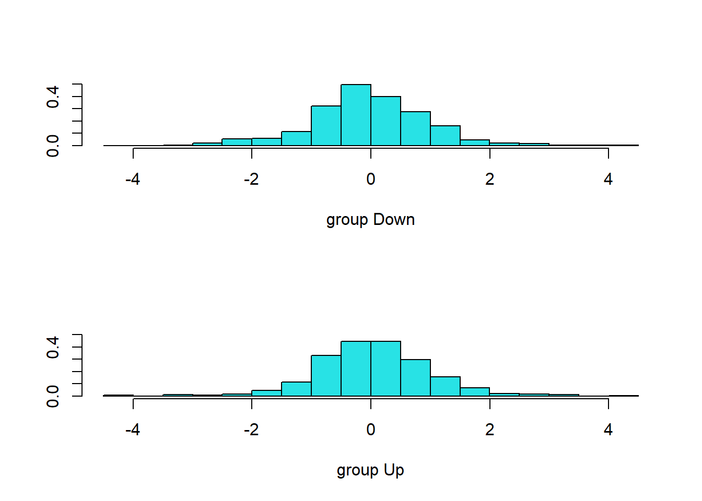

Nota Víctor: En este apartado se van a mostrar varios métodos estadísticos para el problema de clasificación supervisada. El más conocido es la regresión logística, cuyos resultados poseen una interpretabilidad que el resto de métodos que vamos a ver: Análisis Discriminante, Naive Bayes y \(K\)-vecinos más próximos (KNN), no poseen, como se ve en la imagen del Capítulo 2.
En el material original también se incluye en el Lab Regresión de Poisson que para mí no encaja en “métodos de clasificación”, por ello he decidido omitirla aquí (pongo sólo unos comentarios).
Por último, hecho en falta en el material original mostrar en este apartado el tema de curvas ROC. Aparece más adelante en el Lab de SVM (apartado 9.3).
Datos: Smarket, mercado de valores
Examinamos algunos resúmenes numéricos y gráficos de los datos Smarket del paquete ISLR2. Este conjunto de datos consiste en rendimientos porcentuales para el índice bursátil S&P 500 durante 1.250 días, desde comienzos de 2001 hasta finales de 2005. Para cada fecha, se han registrado los rendimientos porcentuales de cada uno de los cinco días de negociación anteriores, desde lagone hasta lagfive. También se han registrado volume (el número de acciones negociadas el día anterior, en miles de millones), Today (el rendimiento porcentual en la fecha en cuestión) y direction (si el mercado estaba Up o Down en esta fecha). Nuestro objetivo es predecir direction (una variable respuesta cualitativa) usando las otras características.
Year Lag1 Lag2 Lag3
Min. :2001 Min. :-4.922000 Min. :-4.922000 Min. :-4.922000
1st Qu.:2002 1st Qu.:-0.639500 1st Qu.:-0.639500 1st Qu.:-0.640000
Median :2003 Median : 0.039000 Median : 0.039000 Median : 0.038500
Mean :2003 Mean : 0.003834 Mean : 0.003919 Mean : 0.001716
3rd Qu.:2004 3rd Qu.: 0.596750 3rd Qu.: 0.596750 3rd Qu.: 0.596750
Max. :2005 Max. : 5.733000 Max. : 5.733000 Max. : 5.733000
Lag4 Lag5 Volume Today
Min. :-4.922000 Min. :-4.92200 Min. :0.3561 Min. :-4.922000
1st Qu.:-0.640000 1st Qu.:-0.64000 1st Qu.:1.2574 1st Qu.:-0.639500
Median : 0.038500 Median : 0.03850 Median :1.4229 Median : 0.038500
Mean : 0.001636 Mean : 0.00561 Mean :1.4783 Mean : 0.003138
3rd Qu.: 0.596750 3rd Qu.: 0.59700 3rd Qu.:1.6417 3rd Qu.: 0.596750
Max. : 5.733000 Max. : 5.73300 Max. :3.1525 Max. : 5.733000
Direction
Down:602
Up :648
par(pty="s")pairs(Smarket)
La función cor() produce una matriz que contiene todas las correlaciones por pares entre los predictores en un conjunto de datos. El primer comando a continuación da un mensaje de error porque la variable direction es cualitativa.
Como era de esperar, las correlaciones entre las variables lag... y los rendimientos de hoy (Today) son cercanas a 0. En otras palabras, parece haber poca correlación entre los rendimientos de hoy y los rendimientos de días anteriores. La única correlación sustancial es entre Year y volume. Al dibujar los datos, que están ordenados cronológicamente, vemos que volume aumenta con el tiempo. En otras palabras, el número promedio de acciones negociadas diariamente aumentó de 2001 a 2005.
plot(Smarket$Volume, type ="l") # añadido el "type"
4.1 Regresión logística
Vamos a ajustar un modelo de regresión logística para predecir la direction utilizando desde lagone hasta lagfive y volume. La función glm() se puede utilizar para ajustar muchos tipos de modelos lineales generalizados, incluida la regresión logística. La sintaxis de la función glm() es similar a la de lm(), pero ahora debemos pasar el argumento family = binomial para decirle a R que ejecute una regresión logística en lugar de otro tipo de modelo lineal generalizado.
Call:
glm(formula = Direction ~ Lag1 + Lag2 + Lag3 + Lag4 + Lag5 +
Volume, family = binomial, data = Smarket)
Coefficients:
Estimate Std. Error z value Pr(>|z|)
(Intercept) -0.126000 0.240736 -0.523 0.601
Lag1 -0.073074 0.050167 -1.457 0.145
Lag2 -0.042301 0.050086 -0.845 0.398
Lag3 0.011085 0.049939 0.222 0.824
Lag4 0.009359 0.049974 0.187 0.851
Lag5 0.010313 0.049511 0.208 0.835
Volume 0.135441 0.158360 0.855 0.392
(Dispersion parameter for binomial family taken to be 1)
Null deviance: 1731.2 on 1249 degrees of freedom
Residual deviance: 1727.6 on 1243 degrees of freedom
AIC: 1741.6
Number of Fisher Scoring iterations: 3
Ningún p-valor es significativo. El más pequeño aquí está asociado con lagone. El coeficiente negativo de este predictor sugiere que si el mercado tuvo un rendimiento positivo ayer, es menos probable que suba hoy. Sin embargo, con ese p-valor de 0.15, no hay una clara evidencia de asociación real entre lagone y direction.
Se puede usar la función coef() para acceder solo a los coeficientes de este modelo ajustado. La función summary() permite acceder a aspectos particulares del modelo ajustado, como los p-valores para los coeficientes:
coef(glm.fits)summary(glm.fits)$coefsummary(glm.fits)$coef[, 4] # sólo p-valores
Nota Víctor: No se muestran los resultados ni se dan más detalles… Por “no perder tiempo” con un modelo ajustado que “no merece la pena”.
4.1.1 Predicción
La función predict() se puede utilizar para predecir la probabilidad de que el mercado suba, dados los valores de los predictores. La opción type = "response" le dice a R que genere probabilidades de la forma \(P(Y=1|X)\), en lugar de generar el logit (log odds, por defecto, type = "link"). Si no se proporciona ningún conjunto de datos a la función predict(), entonces se calculan las probabilidades para los datos de entrenamiento que se usaron para ajustar el modelo de regresión logística. A continuación se muestran sólo las primeras diez probabilidades (¡Ojo! con el modelo ajustado previamente -“que no merece la pena”-).
glm.probs <-predict(glm.fits, type ="response")glm.probs[1:10]
Nota: Sabemos que estos valores corresponden a la probabilidad de que el mercado suba, en lugar de que baje, porque con la función contrasts() (véase el anexo Herramientas) se ve que R ha creado una variable dummy con un 1 para Up.
Para hacer una predicción sobre si el mercado subirá o bajará en un día en particular, debemos convertir estas probabilidades pronosticadas en etiquetas de clase, Up o Down. Los siguientes dos comandos crean un vector de predicciones de clase basado en si la probabilidad prevista de un aumento del mercado es mayor o menor que un determinado valor denominado punto de corte, en este caso 0.5 (elegido arbitrariamente)
El primer comando crea un vector de 1.250 elementos Down. La última línea transforma en Up todos los elementos para los que la probabilidad pronosticada de un aumento del mercado supera el punto de corte0.5.
4.1.2 Matriz de confusión
Dadas estas predicciones, la función table() se puede usar para producir una matriz de confusión para determinar cuántas observaciones se clasificaron correcta o incorrectamente. Al ingresar en table() dos vectores cualitativos, R creará una tabla 2x2 con recuentos del número de veces que ocurrió cada combinación, p.ej. pronosticó Up y el mercado aumentó, predijo Up y el mercado disminuyó, etc.
table(glm.pred, Smarket$Direction)
glm.pred Down Up
Down 145 141
Up 457 507
(145+507) /1250
[1] 0.5216
mean(glm.pred == Smarket$Direction)
[1] 0.5216
Los elementos diagonales de la matriz de confusión indican predicciones correctas, mientras que los que están fuera de la diagonal representan predicciones incorrectas. Por lo tanto, nuestro modelo predijo correctamente que el mercado subiría en 507 días y que bajaría en 145 días, para un total de 507+145 = 652 predicciones correctas. La función mean() se puede utilizar para calcular la fracción de días en los que la predicción fue correcta. En este caso, la regresión logística predijo correctamente el movimiento del mercado el 52.2% de las veces.
A primera vista, parece que el modelo de regresión logística funciona un poco mejor que las conjeturas aleatorias (“lanzar una moneda”). Sin embargo, este resultado es engañoso porque entrenamos y probamos el modelo en el mismo conjunto de 1250 observaciones En otras palabras, 100%-52.2%=47.8%, es la tasa de error de entrenamiento.
Nota Víctor: Es un muy buen ejercicio cambiar el valor del punto de corte y ver cómo cambian las prediccciones, la matriz de confusión y, por tanto, la tasa de error.
4.1.3 Datos de entrenamiento y test/prueba
Como se ha mencionado en el Capítulo de Aprendizaje Estadístico, la tasa de error de entrenamiento suele ser demasiado optimista: tiende a subestimar la tasa de error de test. Por ello se acude al enfoque de dividir los datos en los subconjuntos de entrenamiento y test/validación, que se ve en detalle en el siguiente Capítulo (Remuestreo).
Para implementar esta estrategia, primero crearemos un vector correspondiente a las observaciones de 2001 a 2004 (datos de entrenamiento). Luego usaremos este vector para crear un conjunto de datos retenidos de observaciones de 2005, que constituyen el conjunto de datos de test/validación.
Nota Víctor: Al tratarse de datos de serie temporal, no tiene sentido que los datos de entrenamiento y test se escojan aleatoriamente, como es habitual.
Los elementos del vector train que corresponden a observaciones que ocurrieron antes de 2005 se establecen en TRUE, mientras que los que corresponden a observaciones en 2005 se establecen en FALSE. La notación != significa que no es igual a, por lo tanto, Smarket[!train, ] produce una submatriz de los datos del mercado de valores que contiene solo las observaciones para las cuales train es FALSE—es decir, las observaciones con fechas en 2005. (véanse más detalles en el anexo Herramientas)
Ajustamos un modelo de regresión logística usando solo el subconjunto de las observaciones que corresponden a fechas anteriores a 2005, usando el argumento subset. Posteriormente obtenemos las probabilidades pronosticadas de que el mercado de valores suba para cada uno de los días de nuestro conjunto de test, es decir, para los días de 2005.
Tenga en cuenta que hemos entrenado y probado nuestro modelo en dos conjuntos de datos completamente separados: el entrenamiento se realizó solo con las fechas anteriores a 2005 y el test se realizó solo con las fechas de 2005. Finalmente, calculamos las predicciones para 2005, glm.pred y las comparamos con los movimientos reales del mercado durante ese período de tiempo, recogidos en Direction.2005. Se obtiene así la matriz de confusión.
Direction.2005
glm.pred Down Up
Down 77 97
Up 34 44
mean(glm.pred == Direction.2005)
[1] 0.4801587
mean(glm.pred != Direction.2005)
[1] 0.5198413
Nota: Como la notación != significa que no es igual a, el último comando calcula la tasa de error del conjunto de test.
Los resultados son bastante decepcionantes: la tasa de error del conjunto de datos de test es de 52%, ¡peor que seleccionar al azar! Por supuesto, este resultado no es tan sorprendente, dado que, en general, no se esperaría poder utilizar los rendimientos de días anteriores para predecir el rendimiento futuro del mercado. (Después de todo, si fuera posible hacerlo, los autores se harían ricos en lugar de escribir un libro de texto de estadística).
Recordemos que el modelo de regresión logística tenía p-valores muy decepcionantes asociados con todos los predictores, y que el p-valor más pequeño, pero no significativo, correspondía a lagone. Quizá eliminando las variables que parecen no ser útiles para predecir direction, podemos obtener un modelo más efectivo. Después de todo, el uso de predictores que no tienen relación con la respuesta tiende a causar un deterioro en la tasa de error del conjunto de datos de test (dado que dichos predictores provocan un aumento en la varianza sin una disminución correspondiente en el sesgo), por lo que eliminar dichos predictores puede, a su vez, generar una mejora. A continuación, reajustamos la regresión logística usando solo lagone y lagtwo, que parecían tener el mayor poder predictivo en el modelo de regresión logística original.
Direction.2005
glm.pred Down Up
Down 35 35
Up 76 106
mean(glm.pred == Direction.2005)
[1] 0.5595238
106/ (106+76)
[1] 0.5824176
Ahora los resultados parecen ser un poco mejores: 56% de los movimientos diarios se han pronosticado correctamente. Vale la pena señalar que, en este caso, una estrategia mucho más simple: predecir que el mercado aumentará cada día, también será correcta el 56% de las veces. Por lo tanto, en términos de tasa de error general, el método de regresión logística no es mejor que el enfoque naive. Sin embargo, la matriz de confusión muestra que en los días en que la regresión logística predice un aumento en el mercado, tiene una tasa de precisión de 58%. Esto sugiere una posible estrategia comercial de comprar en los días en que el modelo predice un mercado en aumento y evitar transacciones en los días en que se pronostica una disminución. Por supuesto, habría que investigar más detenidamente si esta pequeña mejora era real o simplemente se debía a una casualidad.
Supongamos que queremos predecir los rendimientos asociados con valores particulares de lagone y lagtwo. En particular, queremos predecir direction en un día en que lagone y lagtwo sean iguales a 1.2 y 1.1, respectivamente, y en un día en que sean iguales a 1.5 y -0.8. Hacemos esto usando la función predict().
Realizaremos un LDA (Linear Discriminant Analysis) con los datos de Smarket, usando la función lda(), del paquete MASS. Su sintaxis es idéntica a la de lm() y glm() excepto por la ausencia de la opción family. Ajustamos el modelo usando solo las observaciones anteriores a 2005 (datos de entrenamiento).
library(MASS)
Adjuntando el paquete: 'MASS'
The following object is masked from 'package:ISLR2':
Boston
Call:
lda(Direction ~ Lag1 + Lag2, data = Smarket, subset = train)
Prior probabilities of groups:
Down Up
0.491984 0.508016
Group means:
Lag1 Lag2
Down 0.04279022 0.03389409
Up -0.03954635 -0.03132544
Coefficients of linear discriminants:
LD1
Lag1 -0.6420190
Lag2 -0.5135293
plot(lda.fit)

La salida de LDA indica que \(\hat\pi_1=\)0.492 y \(\hat\pi_2=\)0.508 (en la salida anterior: Prior probabilities of groups); es decir, el49.2`% de las observaciones de entrenamiento corresponden a días en los que el mercado bajó. También proporciona las medias del grupo; estos son el promedio de cada predictor dentro de cada clase, y LDA los utiliza como estimaciones de \(\mu_k\) (véase el libro). Esto sugiere que existe una tendencia a que los rendimientos de los 2 días anteriores sean negativos en los días en que el mercado aumenta, y una tendencia a que los rendimientos de los días anteriores sean positivos en los días en que el mercado cae.
La salida coefficients of linear discriminants (coeficientes de discriminantes lineales) proporciona la combinación lineal de lagone y lagtwo que se utilizan para formar la regla de decisión LDA. En otras palabras, estos son los multiplicadores de los elementos de \(X=x\) en (4.24) (Véase la ecuación en el libro). Si \(-0.642\times\)lagone\(- 0.514 \times\)lagtwo es grande, entonces el clasificador LDA pronosticará un aumento del mercado, y si es pequeño, entonces el clasificador LDA pronosticará una caída del mercado.
La función plot() produce gráficos de los discriminantes lineales, obtenidos al calcular \(-0.642\times\)lagone\(- 0.514 \times\)lagtwo para cada una de las observaciones de entrenamiento. Las observaciones Up y Down se muestran por separado.
La función predict() devuelve una lista con tres elementos. El primer elemento, class, contiene las predicciones de LDA sobre el movimiento del mercado. El segundo elemento, posterior, es una matriz cuya \(k\)-ésima columna contiene la probabilidad posterior de que la observación correspondiente pertenezca a la \(k\)-ésima clase, calculada a partir de (4.15). Finalmente, x contiene los discriminantes lineales, descritos anteriormente.
[1] Up Up Up Up Up Up Up Up Up Up Up Down Up Up Up
[16] Up Up Down Up Up
Levels: Down Up
Se puede usar un umbral de probabilidad posterior distinto de 50% para hacer predicciones. Por ejemplo, supongamos que deseamos predecir una disminución del mercado solo si estamos muy seguros de que el mercado de hecho disminuirá ese día; digamos, si la probabilidad posterior es de al menos 90%.
sum(lda.pred$posterior[, 1] > .9)
[1] 0
¡Ningún día en 2005 alcanza ese umbral! De hecho, la mayor probabilidad posterior de disminución en todo 2005 fue de 0.5202.
4.2.2 Análisis Discriminante Cuadrático
Ajustaremos un modelo QDA (Quadratic Discriminant Analysis) con los datos de Smarket, mediante la función qda(), del paquete MASS. La sintaxis es idéntica a la de lda().
Call:
qda(Direction ~ Lag1 + Lag2, data = Smarket, subset = train)
Prior probabilities of groups:
Down Up
0.491984 0.508016
Group means:
Lag1 Lag2
Down 0.04279022 0.03389409
Up -0.03954635 -0.03132544
La salida contiene las medias del grupo. Pero no contiene los coeficientes de los discriminantes lineales, porque el clasificador QDA implica una función cuadrática, en lugar de lineal, de los predictores. La función predict() funciona exactamente de la misma manera que para LDA.
Direction.2005
qda.class Down Up
Down 30 20
Up 81 121
mean(qda.class == Direction.2005)
[1] 0.5992063
En este caso, las predicciones de QDA son precisas casi el 60% de las veces, a pesar de que los datos de 2005 no se usaron para ajustar el modelo. Este nivel de precisión es bastante impresionante para los datos del mercado de valores, que se sabe que son bastante difíciles de modelar con precisión. Esto sugiere que la forma cuadrática asumida por QDA puede capturar la verdadera relación con mayor precisión que las formas lineales asumidas por LDA y la regresión logística. Sin embargo, recomendamos evaluar el rendimiento de este método en un conjunto de test más grande antes de apostar a que este enfoque tendrá siempre más éxito.
4.2.3 Naive Bayes
El modelo Naive Bayes se implementa en R mediante la función naiveBayes(), del paquete e1071. La sintaxis es idéntica a la de lda() y qda(). Por defecto, esta implementación del clasificador naive Bayes modela cada característica cuantitativa mediante una distribución gaussiana. Sin embargo, también se puede utilizar un método de densidad kernel para estimar las distribuciones.
Naive Bayes Classifier for Discrete Predictors
Call:
naiveBayes.default(x = X, y = Y, laplace = laplace)
A-priori probabilities:
Y
Down Up
0.491984 0.508016
Conditional probabilities:
Lag1
Y [,1] [,2]
Down 0.04279022 1.227446
Up -0.03954635 1.231668
Lag2
Y [,1] [,2]
Down 0.03389409 1.239191
Up -0.03132544 1.220765
La salida contiene la media estimada ([,1]) y la desviación estándar ([,2]) para cada variable en cada clase. Por ejemplo, la media de lagone es 0.0428 para Direction = Down y la desviación estándar es 1.2274. Podemos comprobarlo fácilmente:
Direction.2005
nb.class Down Up
Down 28 20
Up 83 121
mean(nb.class == Direction.2005)
[1] 0.5912698
Naive Bayes funciona muy bien con estos datos, con predicciones precisas más del 59% de las veces. Esto es ligeramente peor que QDA, pero mucho mejor que LDA.
La función predict() también puede generar estimaciones de la probabilidad de que cada observación pertenezca a una clase en particular.
nb.preds <-predict(nb.fit, Smarket.2005, type ="raw")nb.preds[1:5,]
Down Up
[1,] 0.4873164 0.5126836
[2,] 0.4762492 0.5237508
[3,] 0.4653377 0.5346623
[4,] 0.4748652 0.5251348
[5,] 0.4901890 0.5098110
4.2.4\(K\)-Nearest Neighbors
Realizaremos KNN (K vecinos más próximos) usando la función knn(), del paquete class. Esta función es bastante diferente a las otras funciones de ajuste de modelos que hemos encontrado hasta ahora. En lugar de un enfoque de dos pasos en el que primero ajustamos el modelo y luego usamos el modelo para hacer predicciones, knn() forma predicciones usando un solo comando. La función requiere cuatro entradas.
Una matriz que contiene los predictores asociados con los datos de entrenamiento, denominada train.X a continuación.
Una matriz que contiene los predictores asociados con los datos para los que deseamos hacer predicciones, denominada test.X a continuación.
Un vector que contiene las etiquetas de clase para las observaciones de entrenamiento, denominado train.Direction a continuación.
Un valor para \(K\), el número de vecinos más próximos que utilizará el clasificador.
Usamos la función cbind(), abreviatura de column bind, para unir las variables lagone y lagtwo en dos matrices, una para el conjunto de entrenamiento y la otra para el conjunto de validación.
La función knn() se puede usar para predecir el movimiento del mercado para las fechas de 2005. Establecemos una semilla aleatoria antes de aplicar knn() porque si varias observaciones están empatadas como vecinos más próximos, entonces R romperá el empate al azar. Por lo tanto, se debe establecer una semilla para garantizar la reproducibilidad de los resultados.
set.seed(1)knn.pred <-knn(train.X, test.X, train.Direction, k =1)table(knn.pred, Direction.2005)
Direction.2005
knn.pred Down Up
Down 43 58
Up 68 83
mean(knn.pred == Direction.2005)
[1] 0.5
Los resultados usando \(K=1\) no son muy buenos, ya que solo se predice correctamente el 50% de las observaciones. Por supuesto, puede ser que \(K=1\) resulte en un ajuste demasiado flexible a los datos. A continuación, repetimos el análisis usando \(K=3\).
knn.pred <-knn(train.X, test.X, train.Direction, k =3)table(knn.pred, Direction.2005)
Direction.2005
knn.pred Down Up
Down 48 54
Up 63 87
mean(knn.pred == Direction.2005)
[1] 0.5357143
Los resultados han mejorado ligeramente. Pero aumentar más el valor de \(K\) no proporciona más mejoras.
Parece que para estos datos, QDA proporciona los mejores resultados de los métodos que hemos examinado hasta ahora.
4.2.4.1 Datos Caravan
KNN no funciona bien en los datos de Smarket pero a menudo proporciona resultados impresionantes. Como ejemplo, aplicaremos el enfoque KNN al conjunto de datos Caravan, del paquete ISLR2. Este conjunto de datos incluye 85 predictores que miden características demográficas de 5.822 individuos. La variable respuesta es Purchase, que indica si un individuo determinado compra o no una póliza de seguro de caravana. En este conjunto de datos, solo 6% de las personas compraron un seguro de caravana.
dim(Caravan)
[1] 5822 86
summary(Caravan$Purchase)
No Yes
5474 348
348/5822
[1] 0.05977327
4.2.4.2 Escalado de variables
Debido a que el clasificador KNN predice la clase de una observación dada del conjunto de validación al identificar las observaciones más próximas a ella, la escala de las variables es importante. Las variables con una escala grande tendrán un efecto mucho mayor en la distancia entre las observaciones, y por lo tanto en el clasificador KNN, que las variables con una escala pequeña.
Una buena forma de manejar este problema es ajustar los datos de modo que todas las variables tengan media 0 y desviación estándar 1. Entonces todas las variables estarán en una escala comparable. La función scale() hace precisamente esto (véase el anexo Herramientas).
Estandarizamos las variables de Caravan, excepto la columna 86, porque esa es la variable cualitativa Purchase.
Ahora cada columna de standardized.X tiene desviación estándar 1 y media 0.
Pasamos a dividir las observaciones en un conjunto de test, que contiene las primeras 1000 observaciones, y un conjunto de entrenamiento, que contiene las observaciones restantes. Es decir, seleccionamos los conjuntos usando su índice no hay aquí una selección aleatoria (véase el anexo Herramientas)
Ajustamos un modelo KNN en los datos de entrenamiento usando \(K=1\) y evaluamos su desempeño en los datos de test.
test <-1:1000test.X <- standardized.X[test, ]test.Y <- Caravan$Purchase[test]train.X <- standardized.X[-test, ]train.Y <- Caravan$Purchase[-test]set.seed(1)knn.pred <-knn(train.X, test.X, train.Y, k =1)mean(test.Y != knn.pred)
[1] 0.118
mean(test.Y !="No")
[1] 0.059
La tasa de error de KNN en las 1000 observaciones para test es un poco menos de 12%. A primera vista, esto puede parecer bastante bueno. Sin embargo, dado que solo 6% de los clientes compraron un seguro, podríamos reducir la tasa de error a 6% prediciendo siempre No (última línea del chunk anterior) ¡independientemente de los valores de los predictores!
Suponga que hay algún costo no trivial al tratar de vender un seguro a un individuo determinado. Por ejemplo, tal vez un vendedor deba visitar a cada cliente potencial. Si la empresa trata de vender seguros a una selección aleatoria de clientes, entonces la tasa de éxito será de solo 6%, lo que puede ser demasiado bajo dados los costos involucrados. En cambio, a la compañía le gustaría tratar de vender seguros solo a los clientes que probablemente lo compren. Por lo tanto, la tasa de error general no es de interés. En cambio, la fracción de individuos que se predice correctamente que comprará un seguro es de interés.
table(knn.pred, test.Y)
test.Y
knn.pred No Yes
No 873 50
Yes 68 9
9/ (68+9)
[1] 0.1168831
Resulta que KNN con \(K=1\) funciona mucho mejor que seleccionar al azar entre los clientes que se prevé que comprarán un seguro. Entre 77 de dichos clientes, 9 (un 11.7%) realmente comprarán seguros. Esto es el doble de la tasa que se obtendría de seleccionar al azar.
¿Y para otros valores de \(K\)?
knn.pred <-knn(train.X, test.X, train.Y, k =3)table(knn.pred, test.Y)
test.Y
knn.pred No Yes
No 920 54
Yes 21 5
5/26
[1] 0.1923077
knn.pred <-knn(train.X, test.X, train.Y, k =5)table(knn.pred, test.Y)
test.Y
knn.pred No Yes
No 930 55
Yes 11 4
4/15
[1] 0.2666667
Usando \(K=3\), la tasa de éxito aumenta a 19%, y con \(K=5\) la tasa es de 26,7%. Esto es más de cuatro veces la tasa que resulta de seleccionar al azar. ¡Parece que KNN está encontrando algunos patrones reales en un conjunto de datos difícil!
Sin embargo, aunque esta estrategia es rentable, vale la pena señalar que se prevé que solo 15 clientes comprarán un seguro usando KNN con \(K=5\). En la práctica, la compañía de seguros puede desear gastar recursos para convencer a más de 15 clientes potenciales para que compren un seguro.
4.2.4.3 KNN vs. reg.log
Como comparación, también podemos ajustar un modelo de regresión logística a los datos. Si usamos 0.5 como el límite de probabilidad pronosticado para el clasificador, entonces tenemos un problema: se predice que solo siete de las observaciones para validación comprarán un seguro, pero es peor, ¡nos equivocamos totalmente! Porque ninguno compra.
Sin embargo, no estamos obligados a utilizar un corte de 0.5. Si, en cambio, predecimos una compra cada vez que la probabilidad de compra predicha supere los 0.25, obtenemos resultados mucho mejores: predecimos que 33 personas comprarán un seguro y estamos en lo correcto para aproximadamente un 33% de estas personas. ¡Esto es más de cinco veces mejor que seleccionar al azar!
Nota Víctor: Como se ha comentado al principio, en el material original también se incluye en este Lab Regresión de Poisson que para mí no encaja en “métodos de clasificación”. Además el enfoque que se da, utilizando primero la función lm() es enrevesado (opinión personal). Por ambas cosas se omiten aquí los detalles, pero se mantienen las ideas generales de este tipo de regresión (también habitual en la práctica).
Bikeshare (en el paquete ISLR2) es el conjunto de datos elegido para ajustar un modelo de regresión de Poisson. Mide el número de alquileres de bicicletas (bikers) por hora en Washington, DC.
Para ajustar un modelo de regresión de Poisson se usa la función glm() con el argumento family = poisson
Una vez más podemos usar la función predict() para obtener los valores ajustados (predicciones) del modelo de regresión de Poisson. Sin embargo, debemos usar el argumento type = "response" para especificar que queremos que R genere \(\exp(\hat\beta_0 + \hat\beta_1 X_1 + \ldots +\hat\beta_p X_p)\) en lugar de que \(\hat\beta_0 + \hat\beta_1 X_1+ \ldots + \hat\beta_p X_p\), que generará de forma predeterminada.
En esta sección, se menciona el uso de la función glm() con el argumento family = poisson para realizar la regresión de Poisson. Anteriormente en esta práctica, usamos la función glm() con family = binomial para realizar una regresión logística. Se pueden usar otras opciones para el argumento family para ajustar otros tipos de GLM. Por ejemplo, family = Gamma ajusta un modelo de regresión gamma.